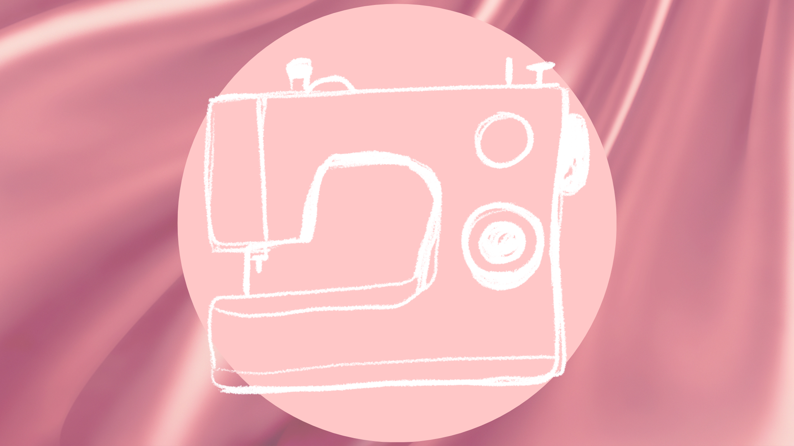

This hobby of mine started when I was in 10th Grade even until now. Over the years, I've seen my impressive progress when it comes to lettering and calligraphy
COOKING
I really enjoyed cooking even when I was a kid and I still do even until now.

SEWING
I started sewing because I needed a Filipinana Top for our P.E Folk Dancing when I was on 12th Grade. Since then, I like making my own clothes and bag.
PLAYING UKULELE
I have a Ukulele that's 3 years old and its name is Muni, it was my parents gift to me.